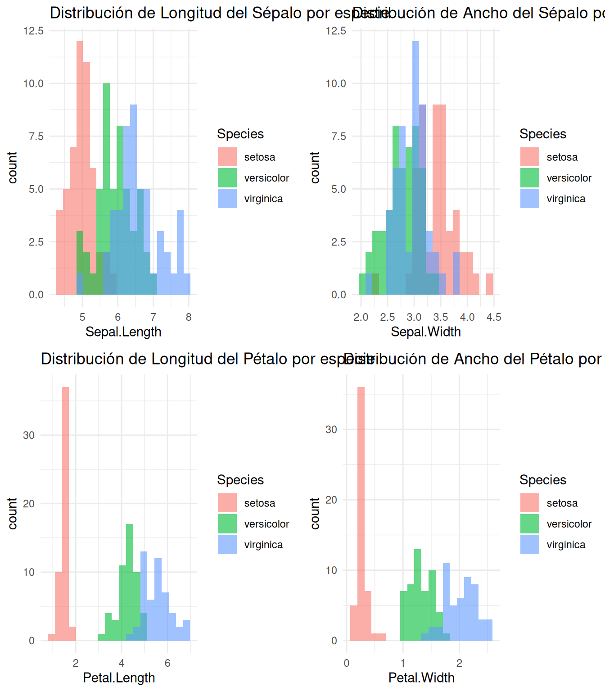

Análisis de Componentes Principales (PCA) con el conjunto de datos Iris
Análisis de Componentes Principales (PCA)
En este documento aprenderemos a realizar un Análisis de Componentes Principales (PCA) usando el conjunto de datos Iris. El PCA es una técnica de reducción de dimensionalidad que nos permite visualizar datos multidimensionales en un espacio de menor dimensión.
Cargar paquetes y datos
Primero, cargamos los paquetes necesarios y el conjunto de datos Iris:
library(ggplot2)library(FactoMineR)library(factoextra)library(GGally) # Para gráficos de paresdata(iris)head(iris)
Antes de realizar el PCA, es importante explorar las variables:
# Histogramas para cada variable numéricapar(mfrow =c(2, 2))for (i in1:4) {hist(iris[,i], main =colnames(iris)[i], xlab ="", col ="lightblue", border ="white")}
# Longitud del sépaloggplot(iris, aes(x = Sepal.Length, fill = Species)) +geom_histogram(alpha =0.6, position ="identity", bins =20) +ggtitle("Distribución de Longitud del Sépalo por especie") +theme_minimal()

# Ancho del sépaloggplot(iris, aes(x = Sepal.Width, fill = Species)) +geom_histogram(alpha =0.6, position ="identity", bins =20) +ggtitle("Distribución de Ancho del Sépalo por especie") +theme_minimal()
# Longitud del pétaloggplot(iris, aes(x = Petal.Length, fill = Species)) +geom_histogram(alpha =0.6, position ="identity", bins =20) +ggtitle("Distribución de Longitud del Pétalo por especie") +theme_minimal()
# Ancho del pétaloggplot(iris, aes(x = Petal.Width, fill = Species)) +geom_histogram(alpha =0.6, position ="identity", bins =20) +ggtitle("Distribución de Ancho del Pétalo por especie") +theme_minimal()
par(mfrow =c(1, 1))# Diagramas de caja por especieggplot(iris, aes(x = Species, y = Sepal.Length, fill = Species)) +geom_boxplot() +ggtitle("Longitud del Sépalo por especie") +theme_minimal()
ggplot(iris, aes(x = Species, y = Sepal.Width, fill = Species)) +geom_boxplot() +ggtitle("Ancho del Sépalo por especie") +theme_minimal()
ggplot(iris, aes(x = Species, y = Petal.Length, fill = Species)) +geom_boxplot() +ggtitle("Longitud del Pétalo por especie") +theme_minimal()
ggplot(iris, aes(x = Species, y = Petal.Width, fill = Species)) +geom_boxplot() +ggtitle("Ancho del Pétalo por especie") +theme_minimal()
Interpretación: Podemos observar que las medidas de pétalos (Petal.Length y Petal.Width) muestran una separación más clara entre especies que las medidas de sépalos.
Gráficos de dispersión por pares
Antes de realizar el PCA, visualizamos todas las combinaciones posibles de variables para entender sus relaciones:
# Versión mejorada con GGallyggpairs(iris, columns =1:4,mapping =aes(color = Species, alpha =0.7),upper =list(continuous =wrap("cor", size =4)),lower =list(continuous =wrap("points", size =1.5)),diag =list(continuous =wrap("densityDiag", alpha =0.5))) +theme_bw() +ggtitle("Matriz de gráficos de dispersión por pares") +theme(plot.title =element_text(hjust =0.5))
Realizar el Análisis de Componentes Principales
El PCA se realiza solo con las variables numéricas (excluyendo la columna Species):
# Seleccionar solo variables numéricasiris_numeric <- iris[, 1:4]# Estandarizar los datos (importante para PCA)iris_scaled <-scale(iris_numeric)# Realizar PCApca_iris <-PCA(iris_scaled, graph =FALSE)
Varianza explicada por cada componente
Uno de los aspectos más importantes del PCA es determinar cuánta varianza explica cada componente:
fviz_eig(pca_iris, addlabels =TRUE, ylim =c(0, 100), main ="Varianza explicada por cada componente",xlab ="Componentes principales", ylab ="Porcentaje de varianza explicada",barfill ="steelblue", barcolor ="steelblue")
Interpretación: El primer componente principal (PC1) explica aproximadamente el 73% de la varianza total, mientras que el segundo componente (PC2) explica alrededor del 23%. Juntos, estos dos componentes capturan más del 95% de la variabilidad en los datos, lo que nos permite reducir la dimensionalidad de 4 a 2 dimensiones con poca pérdida de información.
Biplot: visualización de individuos y variables
El biplot es la representación más informativa del PCA, ya que muestra tanto las observaciones como las variables en el mismo gráfico:
fviz_pca_biplot(pca_iris, col.ind = iris$Species, # Color por especiepalette =c("#00AFBB", "#E7B800", "#FC4E07"),addEllipses =TRUE, # Añadir elipses de concentraciónellipse.level =0.68, # Intervalo de confianzalegend.title ="Especies",repel =TRUE, # Evita superposición de etiquetastitle ="Biplot del PCA - Datos Iris",xlab =paste("CP1 (", round(pca_iris$eig[1,2], 1), "%)", sep =""),ylab =paste("CP2 (", round(pca_iris$eig[2,2], 1), "%)", sep ="")) +theme_minimal()
Interpretación:
Puntos: Cada punto representa una flor, coloreada según su especie. Podemos ver que las tres especies se separan claramente en el espacio de los componentes principales.
Flechas: Representan las variables originales. Su dirección indica cómo contribuyen a los componentes:
Las variables Petal.Length y Petal.Width apuntan hacia la derecha, contribuyendo fuertemente al primer componente.
Sepal.Width contribuye negativamente al primer componente.
Sepal.Length tiene una contribución importante al segundo componente.
Representación de las variables
Este gráfico nos muestra cómo contribuyen las variables originales a los componentes principales:
fviz_pca_var(pca_iris,col.var ="contrib", # Color por contribucióngradient.cols =c("#00AFBB", "#E7B800", "#FC4E07"),repel =TRUE, # Evita superposición de textotitle ="Contribución de variables a los componentes",xlab =paste("CP1 (", round(pca_iris$eig[1,2], 1), "%)", sep =""),ylab =paste("CP2 (", round(pca_iris$eig[2,2], 1), "%)", sep =""))
Interpretación:
Las variables más cercanas al círculo de correlación tienen una mejor representación en el plano factorial.
Petal.Length y Petal.Width están fuertemente correlacionadas (ángulo pequeño entre ellas).
Sepal.Width está negativamente correlacionada con las medidas de pétalos.
El color muestra la contribución relativa de cada variable a los componentes.
Vectores característicos
# Heatmap de los loadings del PCAlibrary(ggplot2)library(reshape2) # Para melt function# Extraer los loadings (coordenadas de las variables)loadings <- pca_iris$var$coord# Convertir a data frame y preparar los datosloadings_df <-as.data.frame(loadings)colnames(loadings_df) <-c("PC1", "PC2", "PC3", "PC4")loadings_df$Variable <-rownames(loadings_df)loadings_melted <-melt(loadings_df, id.vars ="Variable")# Crear el heatmapggplot(loadings_melted, aes(x = variable, y = Variable, fill = value)) +geom_tile(color ="white") +geom_text(aes(label =format(round(value, 2), nsmall =2)), color ="black", size =4) +scale_fill_gradient2(low ="#3498db", mid ="white", high ="#e74c3c",midpoint =0, limits =c(-1, 1)) +labs(title ="Heatmap de los Loadings del PCA",subtitle ="Contribución de cada variable a los componentes principales",x ="Componente Principal",y ="Variable",fill ="Valor del Loading") +theme_minimal(base_size =12) +theme(plot.title =element_text(hjust =0.5, face ="bold"),plot.subtitle =element_text(hjust =0.5),axis.text.x =element_text(angle =0, hjust =0.5))
Este heatmap te permite visualizar rápidamente:
Qué variables contribuyen más a cada componente
La dirección de la contribución (positiva/negativa)
Patrones entre variables y componentes
Rotación Varimax
Para facilitar la interpretación de los loadings en un PCA, puede aplicarse la rotación varimax. Esta técnica redistribuye la varianza de los loadings entre los componentes principales mediante una rotación ortogonal, buscando alcanzar una estructura simple donde:
Cada variable tenga cargas altas en un único componente y cargas cercanas a cero en los demás.
Los componentes resultantes sean más fáciles de asociar con grupos específicos de variables relacionadas.
La rotación varimax no altera:
La varianza total explicada por todos los componentes combinados.
La posición relativa de las observaciones en el espacio de componentes.
Su principal ventaja es que produce componentes más interpretables, especialmente útil cuando los loadings originales muestran patrones complejos o difusos.
rotated_result <-varimax(loadings, normalize =TRUE) # normalize = TRUE para Kaiser normalizationrotated_loadings <- rotated_result$loadings# 4. Convertir a data.frame para visualizaciónrotated_loadings_df <-as.data.frame.matrix(rotated_loadings)colnames(rotated_loadings_df) <-paste0("Rotated_Dim", 1:ncol(rotated_loadings_df))rotated_loadings_df$Variable <-rownames(rotated_loadings_df)# 5. Heatmap de los loadings rotados (ggplot2)library(ggplot2)library(reshape2)rotated_melted <-melt(rotated_loadings_df, id.vars ="Variable")ggplot(rotated_melted, aes(x = variable, y = Variable, fill = value)) +geom_tile(color ="white") +geom_text(aes(label =round(value, 2)), color ="black", size =4) +scale_fill_gradient2(low ="#3498db", mid ="white", high ="#e74c3c",midpoint =0, limits =c(-1, 1)) +labs(title ="Loadings rotados (Varimax)",x ="Componente rotado",y ="Variable",fill ="Loading") +theme_minimal()
¿Cuándo usar rotación varimax?:
Sí usar: Cuando buscas interpretar qué variables contribuyen a cada componente (ej.: en estudios psicométricos o cuando los componentes no son claros).
No usar: Cuando el objetivo es reducir dimensionalidad para algoritmos de machine learning (la rotación no mejora el rendimiento predictivo).
Conclusiones
El análisis PCA nos ha permitido:
Reducir la dimensionalidad de 4 variables a solo 2 componentes principales que capturan el 95% de la variabilidad.
Visualizar claramente la separación entre las tres especies de Iris.
Identificar que las medidas de pétalos son las que más contribuyen a diferenciar las especies.
Confirmar que Iris setosa es claramente distinta de Iris versicolor e Iris virginica en el espacio de componentes principales.
Este tipo de análisis es extremadamente útil para explorar datos multivariados y encontrar patrones subyacentes en conjuntos de datos complejos.